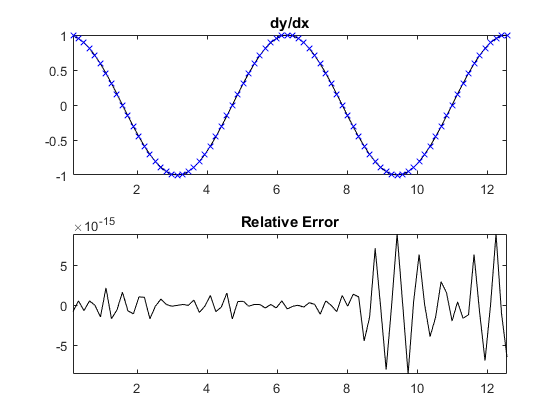
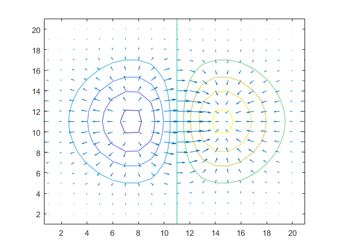

gradientSpect
Calculate the gradient using a Fourier spectral method.
Syntax
fx = gradient(f, dx) fx = gradient(f, dx, [], deriv_order) fn = gradient(f, dn, dim) fn = gradient(f, dn, dim, deriv_order) [fx, fy] = gradient(f, dn) [fx, fy] = gradient(f, dn, [], deriv_order) [fx, fy, fz, ...] = gradient(f, dn) [fx, fy, fz, ...] = gradient(f, dn, [], deriv_order)
Description
gradientSpect calculates the gradient of an n-dimensional input matrix using the Fourier collocation spectral method. The gradient for singleton dimensions is returned as 0.
A 1D example:
% compute gradient of a 2 period sinusoid x = pi/20:pi/20:4*pi; y = sin(x); dydx = gradientSpect(y, pi/20); % plot gradient and error compared to analytical solution subplot(2, 1, 1); plot(x, cos(x), 'k-', x, dydx, 'bx'); axis tight; title('dy/dx'); subplot(2, 1, 2); plot(x, cos(x) - dydx, 'k-'); axis tight; title('Relative Error');
A modification of the example given with the MATLAB gradient function (x and y are reversed):
% generate input and compute gradient [x, y] = meshgrid(-2:.2:2, -2:.2:2); z = x .* exp(-x.^2 - y.^2); [px, py] = gradientSpect(z, [.2, .2]); % plot figure; contour(z) hold on; quiver(py, px); hold off;
Inputs
f |
matrix or vector to find the gradient of |
dn |
array of values for the grid point spacing in each dimension. If a value for dim is given, dn is the spacing in dimension dim. |
Optional Inputs
dim |
optional input to specify a single dimension over which to compute the gradient for n-dimension input functions |
deriv_order |
order of the derivative to compute, e.g., use 1 to compute df/dx, 2 to compute df^2/dx^2, etc. (default = 1) |
Outputs
fx, fy, ... |
gradient in the each dimension, where x corresponds to dim = 1, y corresponds to dim = 2 etc. |
See Also
getFDMatrix, gradient, gradientFD